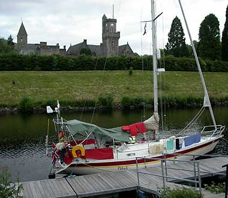
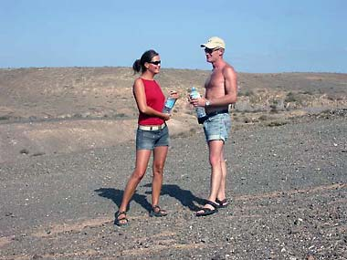
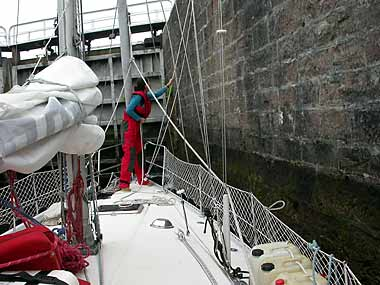
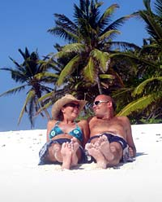

Reisebrev
Alle reisebrev fra S/Y Petrell i kronologisk rekkefølge.
 04.07.2003 Reisebrev 1: Første reisebrev fra Frode og Marit
04.07.2003 Reisebrev 1: Første reisebrev fra Frode og Marit
10.07.2003 Reisebrev 2: Inverness, Lochness og Fort Augustus 20.07.2003 Reisebrev 3: Videre til Oban, Craobh og Gigha Island
20.07.2003 Reisebrev 3: Videre til Oban, Craobh og Gigha Island 01.08.2003 Reisebrev 4: Storbyturister i Belfast
01.08.2003 Reisebrev 4: Storbyturister i Belfast 06.08.2003 Reisebrev 5: Wicklow og Kinsale, 29.07.03.-03.08.03
06.08.2003 Reisebrev 5: Wicklow og Kinsale, 29.07.03.-03.08.03 20.08.2003 Reisebrev 6: Biskaya, Bayona og Islas Cies
20.08.2003 Reisebrev 6: Biskaya, Bayona og Islas Cies 01.09.2003 Reisebrev 7: Povoa de Varzim, Cascais og Lisboa, 17. - 29.08.03
01.09.2003 Reisebrev 7: Povoa de Varzim, Cascais og Lisboa, 17. - 29.08.03 05.09.2003 Reisebrev 8: Sines, Porto Santo, Madeira, Graciosa og Lanzarote
05.09.2003 Reisebrev 8: Sines, Porto Santo, Madeira, Graciosa og Lanzarote
17.10.2003 Reisebrev 9: Lanzarote, Gran Canaria, 30.09. - 12.11.2003 20.11.2003 Reisebrev 10: Cabo Verde, 12. - 17. 11. 2003
20.11.2003 Reisebrev 10: Cabo Verde, 12. - 17. 11. 2003 17.12.2003 Reisebrev 11: Atlanterhavskryssinga - 27.11 - 12.12.2003
17.12.2003 Reisebrev 11: Atlanterhavskryssinga - 27.11 - 12.12.2003 10.01.2004 Reisebrev 12: I sambaen og fotballens hjemland
10.01.2004 Reisebrev 12: I sambaen og fotballens hjemland 23.02.2004 Reisebrev 13: Fortaleza og Djeveløya, 30.01.04 - 21.02.04
23.02.2004 Reisebrev 13: Fortaleza og Djeveløya, 30.01.04 - 21.02.04 17.03.2004 Reisebrev 14: Trinidad og litt til, 16.02.04 - 11.03.04
17.03.2004 Reisebrev 14: Trinidad og litt til, 16.02.04 - 11.03.04 01.05.2004 Reisebrev 15: Panama, 11.03. - 26.04.04
01.05.2004 Reisebrev 15: Panama, 11.03. - 26.04.04 30.05.2004 Reisebrev 16: Galapagos, 26.04. - 23.05.04
30.05.2004 Reisebrev 16: Galapagos, 26.04. - 23.05.04 08.07.2004 Reisebrev 17: Marquesas, 23.05. - 01.07.04
08.07.2004 Reisebrev 17: Marquesas, 23.05. - 01.07.04 20.09.2004 Reisebrev 19: Penrhyn, 28.07-14.09.04
20.09.2004 Reisebrev 19: Penrhyn, 28.07-14.09.04 20.09.2004 Reisebrev 18: Tuamotus, 01.- 28.07.04
20.09.2004 Reisebrev 18: Tuamotus, 01.- 28.07.04 09.11.2004 Reisebrev 20: Samoa & Tonga, 14.09 - 06.11.04
09.11.2004 Reisebrev 20: Samoa & Tonga, 14.09 - 06.11.04 27.12.2004 Reisebrev nr 1 fra Antarktisturen: På vei til Antarktis
27.12.2004 Reisebrev nr 1 fra Antarktisturen: På vei til Antarktis
07.01.2005 Reisebrev nr 2 fra Antarktisturen: Vel fremme i Antarktis 05.02.2005 Reisebrev nr 4 fra Antarktisturen: Falklandsøyene
05.02.2005 Reisebrev nr 4 fra Antarktisturen: Falklandsøyene 05.02.2005 Reisebrev nr 3 fra Antarktisturen
05.02.2005 Reisebrev nr 3 fra Antarktisturen 07.04.2005 Reisebrev 21: Whangarei, New Zealand, februar og mars, 2005
07.04.2005 Reisebrev 21: Whangarei, New Zealand, februar og mars, 2005 01.07.2005 Reisebrev 22 : Besøk hos jordomseilerne - et utdrag av dagboken til Thomas
01.07.2005 Reisebrev 22 : Besøk hos jordomseilerne - et utdrag av dagboken til Thomas 01.08.2005 Reisebrev 23: Yasawa-øyane, Fiji, juni - juli 2005
01.08.2005 Reisebrev 23: Yasawa-øyane, Fiji, juni - juli 2005 10.10.2005 Reisebrev 24: August og september - Vanuatu
10.10.2005 Reisebrev 24: August og september - Vanuatu 01.05.2006 Autraliaturen, del 1
01.05.2006 Autraliaturen, del 1 08.06.2006 Australiaturen, del 2
08.06.2006 Australiaturen, del 2- 29.06.2006 Reisebrev 25: Townsville til Cairns, mai -06
 01.07.2006 Reisebrev 26: Cairns til Darwin, juni og juli -06
01.07.2006 Reisebrev 26: Cairns til Darwin, juni og juli -06
09.08.2006 Reisbrev 27 - Darwin til Cocos (Keeling) 09.10.2006 Reisebrev 28 - CHAGOS, INDISKE HAV
09.10.2006 Reisebrev 28 - CHAGOS, INDISKE HAV 17.11.2006 Reisebrev 29 - MADAGASKAR
17.11.2006 Reisebrev 29 - MADAGASKAR 17.11.2006 Reisebrev 30 - MOZAMBIQUE KANALEN
17.11.2006 Reisebrev 30 - MOZAMBIQUE KANALEN 19.01.2007 Reisebrev 31 - SøR AFRIKA
19.01.2007 Reisebrev 31 - SøR AFRIKA 18.04.2007 Reisebrev 32 - ST.HELENA OG SØRLEGE ATLANTERHAV
18.04.2007 Reisebrev 32 - ST.HELENA OG SØRLEGE ATLANTERHAV 02.07.2007 Reisebrev 33 Karibien til Azorene til Irland
02.07.2007 Reisebrev 33 Karibien til Azorene til Irland 16.09.2007 Reisebrev 34 Skottland, Irland og hjem igjen til mor
16.09.2007 Reisebrev 34 Skottland, Irland og hjem igjen til mor